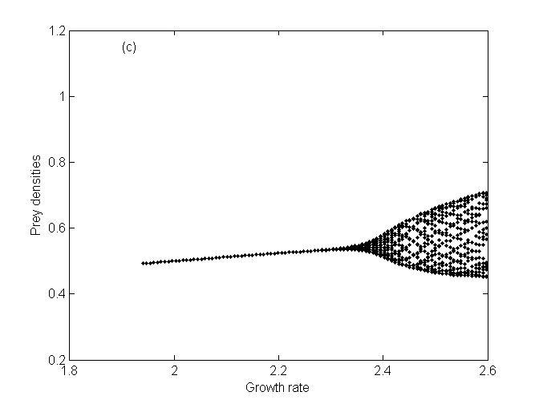
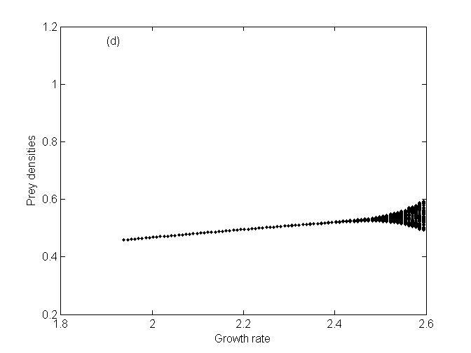
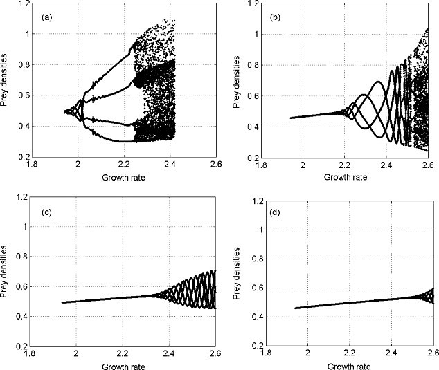

前尘往事
当年大学教授刚好在讲授《MATLAB》这门课，正好之前数学建模竞赛经常用到。基本的内容也就熟悉，后面刘教授一时高兴，拿了一篇在生物数学之类的著名期刊发表的全英的论文，叫我们练练手。读懂论文，再利用MATLAB添加相应的示意图。
玩着玩着，也挺有趣。一群同学在老旧的机房编译，调试代码。教授巡堂讲解，据说最后我画出的图，与题目论述的问题比较接近。哇咔咔。开心。
贼高兴，当时围脖写下感想：
传说中的 混沌现象“分岔图”，真心觉得 算法的优化很重要，不然多强悍的CPU都扛不住，话说i3 的CPU也算了15分钟，算法优化是尽量 可以打包输出再统一处理，别一步步都调用循环。



其实，无忧无虑，单纯读读paper。写写abstract。科研也挺好玩的 虽然现在忙成狗